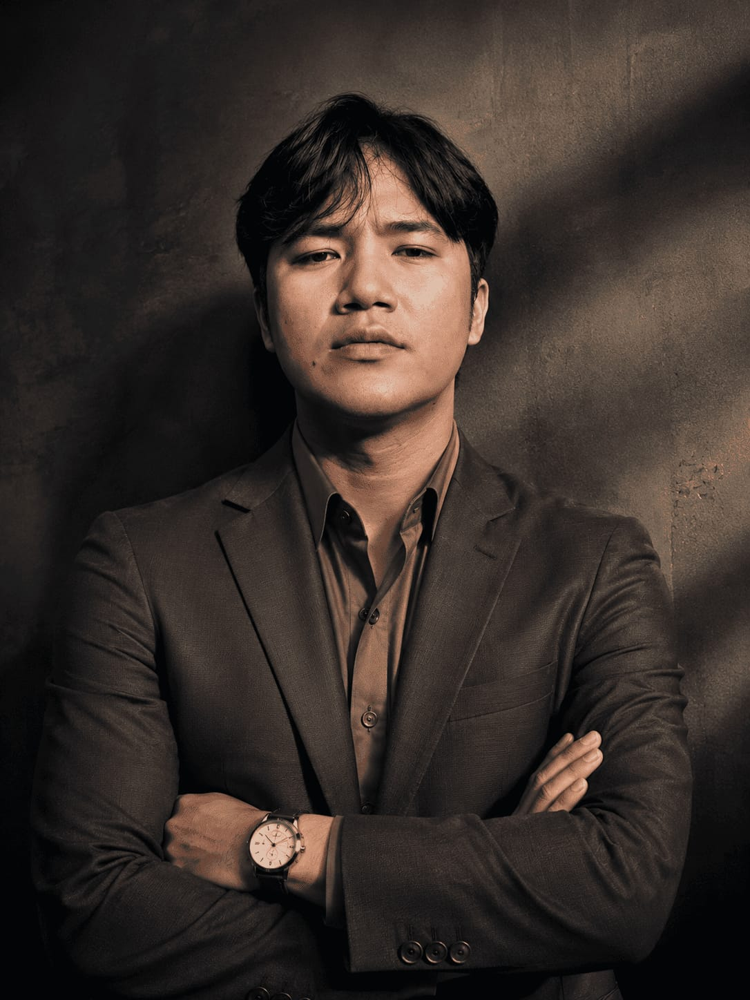

Quick profile
AGUS HIDAYAHTULLOH
Web Developer · Backend Enthusiast
- Main stack
- PHP / Laravel / MySQL
- Experience
- Web development · Backend · Linux deployment
- Location
- Tangerang Selatan
- Availability
- Open to opportunities
AGUS.DEV
Initializing portfolio...
AGUS HIDAYAHTULLOH
Saya membangun aplikasi web modern menggunakan PHP, Laravel, MySQL, JavaScript, REST API, serta melakukan deployment dan maintenance pada Linux Server.

Terminal profil: Agus Hidayahtulloh, Web Developer dan Backend Enthusiast dengan skill PHP, Laravel, MySQL, REST API, dan Linux.
Quick profile
Web Developer · Backend Enthusiast
Currently learning: Laravel Advanced, Backend Architecture, REST API, Linux Server, dan Clean Code.
About / Profile
Saya adalah mahasiswa Teknik Informatika yang memiliki ketertarikan kuat pada pengembangan aplikasi web, khususnya backend development.
Saya terbiasa membangun aplikasi menggunakan PHP dan MySQL, mengembangkan REST API, melakukan integrasi database, debugging, serta deployment aplikasi pada Linux Server.
Saya menikmati proses mengubah permasalahan menjadi sistem yang sederhana, efisien, dan mudah digunakan.
Saat ini saya terus mengembangkan kemampuan dalam Laravel, API development, database architecture, dan software engineering.
Logika aplikasi, autentikasi, dan alur data yang terstruktur.
Endpoint yang konsisten untuk integrasi antarsistem.
Desain tabel, query, dan pengelolaan data aplikasi.
Konfigurasi dasar server, Apache, dan maintenance.
Mengurai masalah, debugging, menguji, dan memperbaiki solusi secara iteratif.
Experience / Real work
NetCrft.id
BrainBox Learning
Capabilities / Tools
Selected work / Case studies
Academic Management System
Sistem akademik berbasis web untuk mengelola siswa, aktivitas pembelajaran, assessment, tryout, dan progress akademik.
Helpdesk Web Application
Aplikasi helpdesk untuk mengelola tiket, status penanganan, pengguna, role, dan kebutuhan operasional admin.
Source code is not publicly available.
Digital Agency Website
Website agency dengan visual neo-brutalist, hierarchy yang tegas, interaksi ringan, dan layout responsif untuk memperkenalkan layanan digital.
Project archive

PHP · MySQL · JavaScript

HTML · CSS · JavaScript

HTML · CSS · JavaScript
cashier.appProject archive · Detail dapat diminta saat proses rekrutmen.
complaint.systemProject archive · Detail dapat diminta saat proses rekrutmen.
Tidak ada project yang cocok dengan pencarian tersebut.
Public code / Activity
@AgusHidayahtulloh333
Repository publik dimuat langsung dari GitHub. Jika API tidak tersedia, tautan profil tetap dapat digunakan.
Grafik tidak dapat dimuat. Lihat aktivitas langsung di GitHub ↗
Development philosophy
Interactive feature / Try it
Ketik help, lalu gunakan command untuk menjelajahi halaman tanpa mouse.
agus@portfolio:~$ whoami
Agus Hidayahtulloh
Web Developer · Backend Enthusiast
Ketik “help” untuk melihat command.
Command tersedia: about, skills, projects, experience, contact, github, dan clear.
Curriculum vitae
Versi utama yang ringkas untuk proses rekrutmen dan peninjauan pengalaman.
Download PDF ↓Versi visual dari profil profesional. Belum dipublikasikan agar tidak ada tautan unduhan palsu.
Available soon
Have an opportunity?
Saya terbuka untuk kesempatan Web Developer, Backend Developer, Internship, Junior Developer, maupun kolaborasi project.